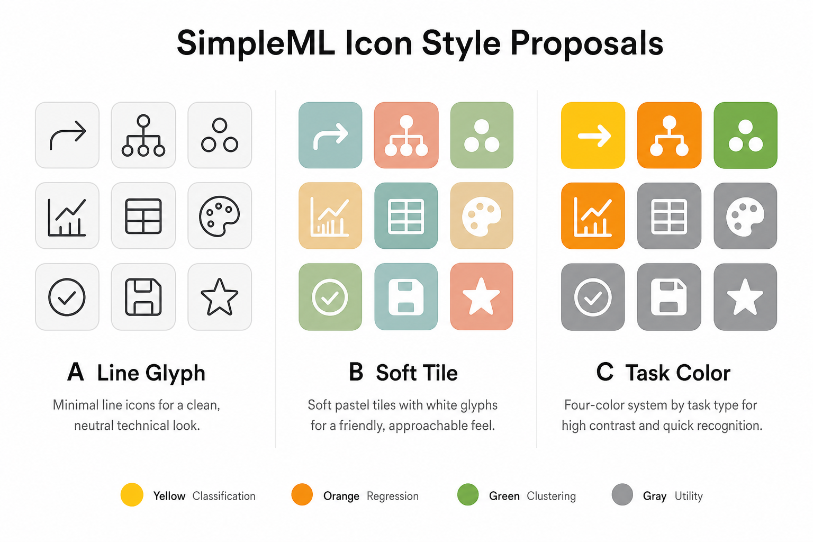
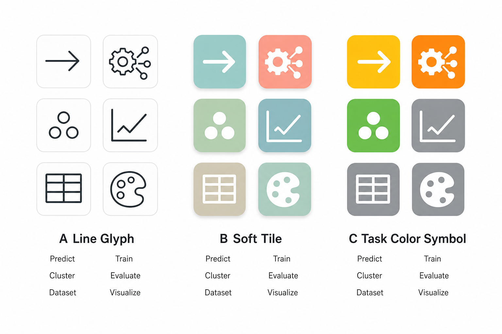

A Line Glyph
线描极简
深灰线描 + 浅底圆角。像专业 CAD/GH 插件，安静、耐看，长期最稳。
Predict
Train
Cluster
Evaluate
Dataset
Visualize
- 最干净，印刷/深浅主题都清晰
- 不依赖颜色也能辨认功能
- 适合严肃教学与长期维护
当前工具栏图标是彩色底 + 英文缩写（Pred / VizR / Smart），小尺寸发糊且不统一。 下面三套方案都去掉文字缩写，只用图形。点选一张方案后，把结果发给我即可开始重绘全套图标。
A / B / C。
选中后可复制一句话发给 Cursor。

深灰线描 + 浅底圆角。像专业 CAD/GH 插件，安静、耐看，长期最稳。
低饱和色块 + 白色剪影。更友好、教学向，一眼活泼，但不花哨。
沿用你们已有习惯：黄=分类、橙=回归、绿=聚类、灰=工具。去掉缩写字，只留符号。
